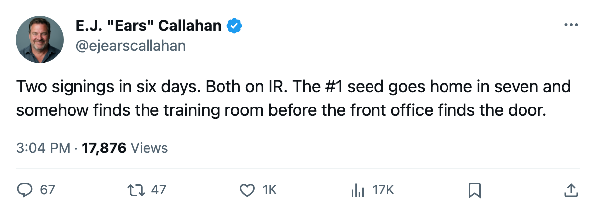
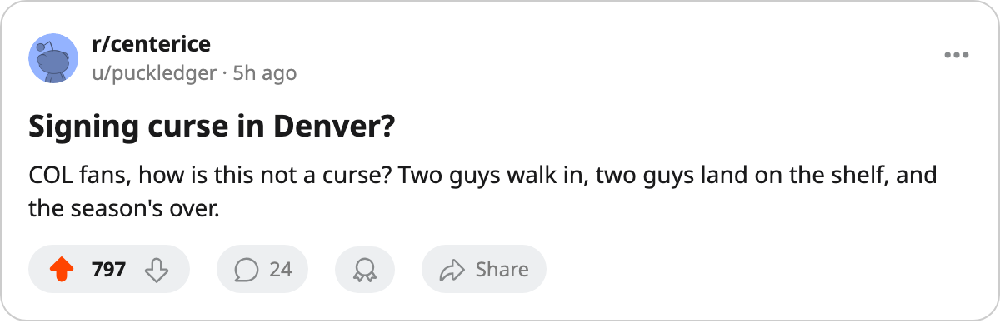

RUMOR METER: COL Signs 2. Both Go to IR. The Pattern Follows the #1 Seed Out the Door. 🔥🔥
Five of the eight signings filed since March 25 land on the injured list. The clubs that just went home are catching them fastest.
 E.J. "Ears" CallahanInsider · The Hot Stove
E.J. "Ears" CallahanInsider · The Hot Stove

COL signs 2, both on IR; pattern at 5 of 8 this fortnight

The  Colorado Avalanche signed a defenseman on 2005-04-18. Four days later,
Colorado Avalanche signed a defenseman on 2005-04-18. Four days later,  Karlis Skrastins68 went on the injured list with an arm, out until 2005-05-07. He joins Serge Aubin67, signed 2005-04-12, now on the injured list with a wrist, back 2005-04-23. Two signings in 6 days. Both on the shelf. Both filed during the Coyotes' seven-game loss to
Karlis Skrastins68 went on the injured list with an arm, out until 2005-05-07. He joins Serge Aubin67, signed 2005-04-12, now on the injured list with a wrist, back 2005-04-23. Two signings in 6 days. Both on the shelf. Both filed during the Coyotes' seven-game loss to  Phoenix Coyotes in the first round, the one that sent the #1 seed home against the 8th.
Phoenix Coyotes in the first round, the one that sent the #1 seed home against the 8th.
The pattern the desk has tracked since early March is at 5 of 8 this fortnight. Sixty-three percent. It has migrated from the rebuilds to the contenders to the clubs that just walked out of the postseason.
The highest payroll in the league, and its cheapest signing
 Detroit Red Wings runs $80.89M in salary, the top line in the league, $0.84M per point on 96 points, 0 Cups, and a sweep at the hands of
Detroit Red Wings runs $80.89M in salary, the top line in the league, $0.84M per point on 96 points, 0 Cups, and a sweep at the hands of  Dallas Stars in the first round. On 2005-04-13, the club signed Steve Yzerman for $37,250. He put up 0+2=2 in 4 playoff games, landed on the injured list with a groin (onset window between 2005-04-15 and 2005-04-21), and won't return until 2005-06-26. Detroit carries 5 men on the injured list, the most in the league.
Dallas Stars in the first round. On 2005-04-13, the club signed Steve Yzerman for $37,250. He put up 0+2=2 in 4 playoff games, landed on the injured list with a groin (onset window between 2005-04-15 and 2005-04-21), and won't return until 2005-06-26. Detroit carries 5 men on the injured list, the most in the league.
The $37,250 was a veteran minimum. The groin keeps him out past what the calendar has as the next season start date, or at least well into the preseason. That $80.89M bought a sweep and a legend on crutches.
Where the hits are landing
| signing | date | salary | status |
|---|---|---|---|
| Serge Aubin / Colorado Avalanche | 2005-04-12 | $220,230 | IR, wrist, back 2005-04-23 |
| Travis Richards / Dallas Stars | 2005-04-13 | $423,910 | clean |
Milan Kraft /  Pittsburgh Penguins Pittsburgh Penguins | 2005-04-13 | $103,120 | clean |
| Steve Yzerman / Detroit Red Wings | 2005-04-13 | $37,250 | IR, groin, back 2005-06-26 |
David Gosselin68 /  Mighty Ducks of Anaheim Mighty Ducks of Anaheim | 2005-04-14 | $84,330 | IR, abdomen, back 2005-04-22 |
 Marty Reasoner71 / Marty Reasoner71 /  Edmonton Oilers Edmonton Oilers | 2005-04-15 | $528,250 | IR, elbow, back 2005-07-05 |
Ken Belanger /  Vancouver Canucks Vancouver Canucks | 2005-04-17 | $171,270 | clean |
| Karlis Skrastins / Colorado Avalanche | 2005-04-18 | $512,760 | IR, arm, back 2005-05-07 |
The pattern broke its own address in April. WSH caught two on the same body part inside 48 hours and the desk called the migration. Now it's finding the clubs whose season just ended. COL spent $71.56M for 112 points and a first-round exit, posted $20.90M in profit, and managed to put both of its new signings on the injured list in the same window it lost a Game 7.
The Mighty Ducks of Anaheim signing is the only hit with a return date inside 24 hours: David Gosselin, abdomen, back 2005-04-22. The Edmonton Oilers one is the longest: Marty Reasoner, elbow, back 2005-07-05. That one eats half of what should be a development summer.
What the desk called, and what the record grades
The hot-stove desk sits at 11 right, 17 wrong. The signing-injury pattern is the one thread that keeps confirming. Eight signings, five bodies, two clubs that just went home and both of their new arrivals on the shelf. The next signing filed is the test of whether the pattern has a ceiling.
The desk will keep the rating at two flames. The pattern is too thin for three. But COL going 2 for 2 in 6 days while a Game 7 was still warm in the building says something about the timing of these things.

